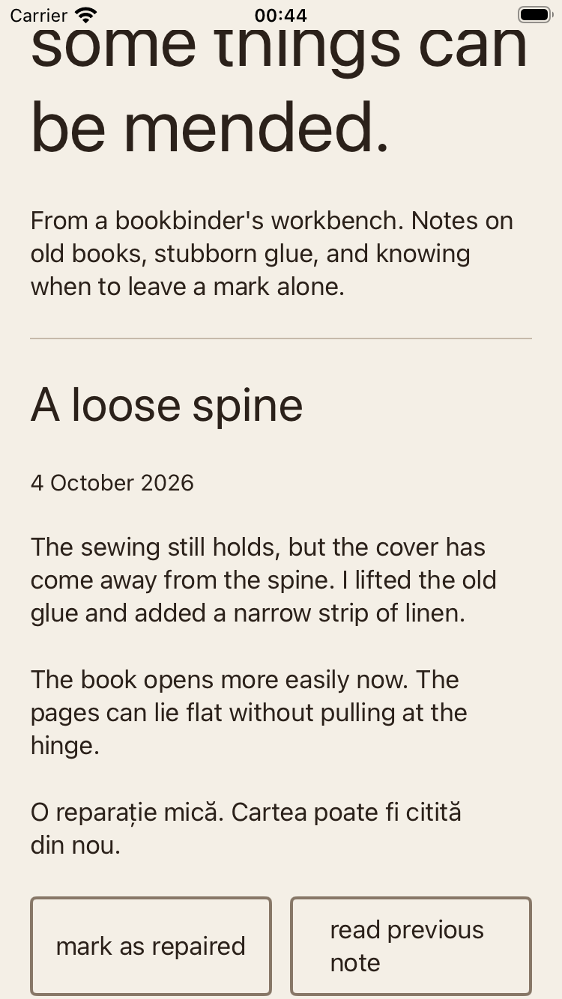
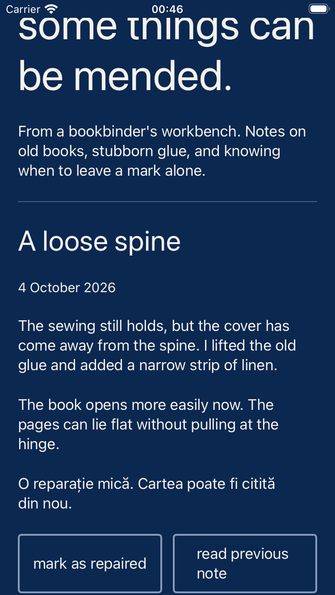
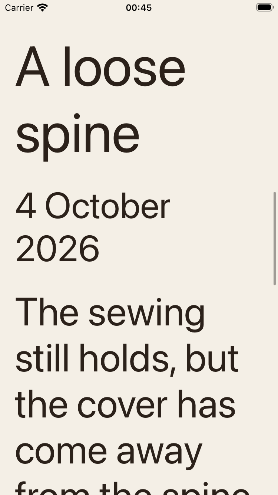
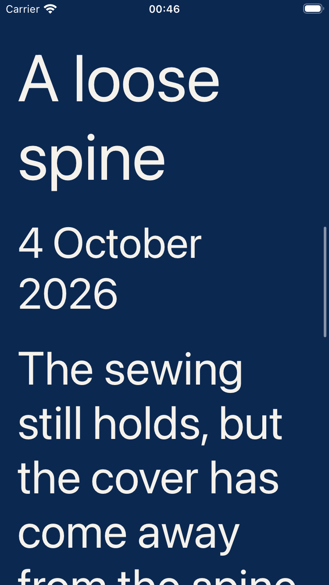

Reading without Schoolbell
The custom font is absent from these app bundles. A native system face keeps the text hierarchy, owner and reading actions available. These are actual XCTest attachments after scrolling and tapping the next-note action.
Read the outcome · Gesture and audit results · Font and layout measurements
The first build failed
The native specimen treated its optional font as required and force-unwrapped a failed lookup.
Fatal error: Unexpectedly found nil while unwrapping an Optional value
Retained app diagnostic · Startup failure report
A readable fallback




The ordinary bundled build still verifies that Schoolbell loads. Simulator audits do not establish VoiceOver order, hardware keyboard use or physical-device behavior.